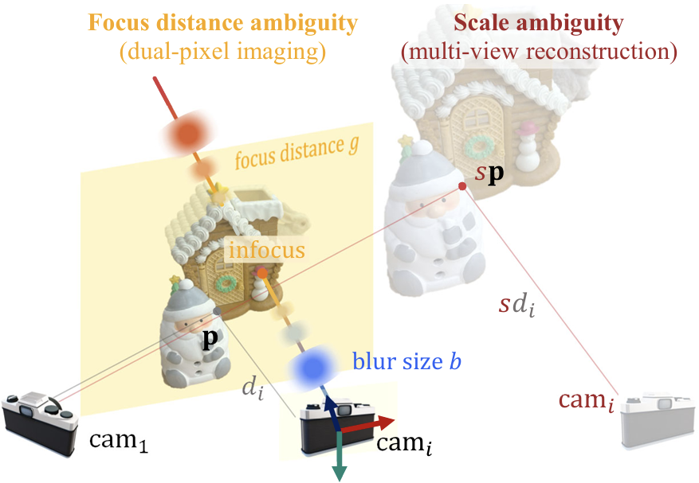
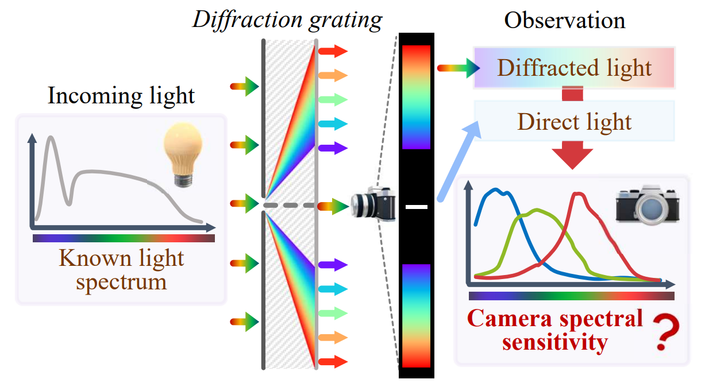
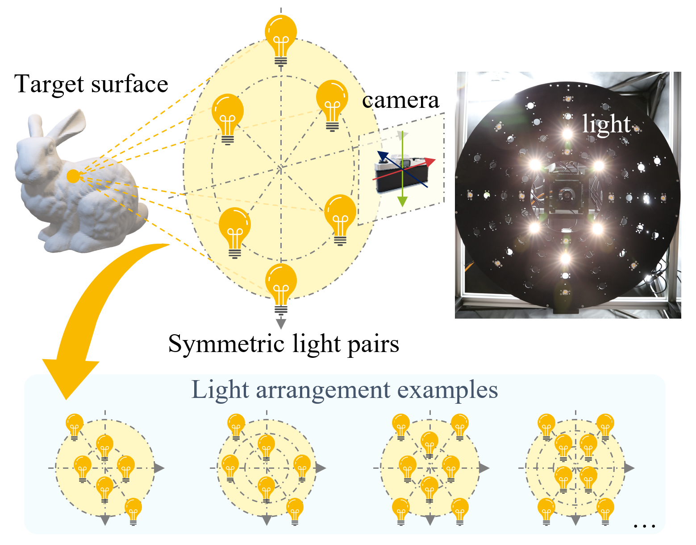
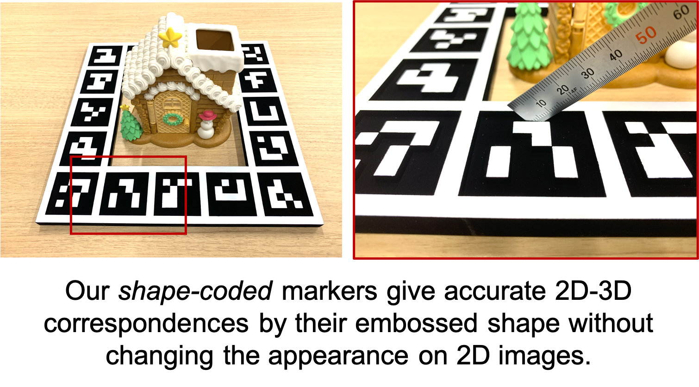

Lilika Makabe received the Ph.D. degree in information science from the University of Osaka, Japan, in 2026, under the supervision of Professor Yasuyuki Matsushita. Her research interests include computer vision, 3D reconstruction, and physics-based vision.
From October 2026, I'm joining Professor Shree Nayar's lab at Columbia University as a visiting scholar.
📣 I'm actively looking for researcher positions starting after my visit. Feel free to get in touch!
News
- Oct 2026Will be joining Professor Shree Nayar's lab at Columbia University as a visiting scholar!
- Sep 2026 🎓Received my Ph.D. from the University of Osaka.
- May 2026 📣Our paper DP-SfM is accepted to IEEE TPAMI.
- May 2026Recognized as an Outstanding Reviewer at CVPR 2026.
Experience
-
Columbia University UpcomingVisiting Scholar · Host: Professor Shree NayarOct. 2026 – Sep. 2027 (expected)
-
 Microsoft Research AsiaResearch InternJun. 2025 – Sep. 2026
Microsoft Research AsiaResearch InternJun. 2025 – Sep. 2026 -
York UniversityVisiting Research Trainee · Host: Professor Michael S. BrownJun. 2024 – Aug. 2024
Publications
Journal Papers

DP-SfM: Dual-Pixel Structure from Motion without Scale Ambiguity
IEEE Transactions on Pattern Analysis and Machine Intelligence (TPAMI), 2026
International Conference Papers

Spectral Sensitivity Estimation with an Uncalibrated Diffraction Grating
Proceedings of IEEE International Conference on Computer Vision (ICCV), 2025

Near-light Photometric Stereo with Symmetric Lights
Proceedings of IEEE International Conference on Computational Photography (ICCP), 2023

Shape-coded ArUco: Fiducial marker for bridging 2D and 3D modalities
Proceedings of IEEE/CVF Winter Conference on Applications of Computer Vision (WACV), 2022